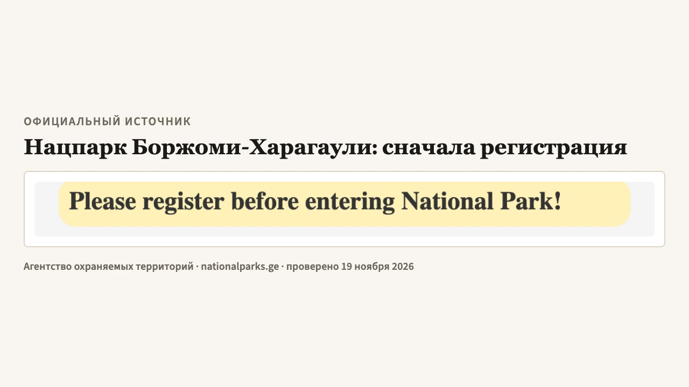
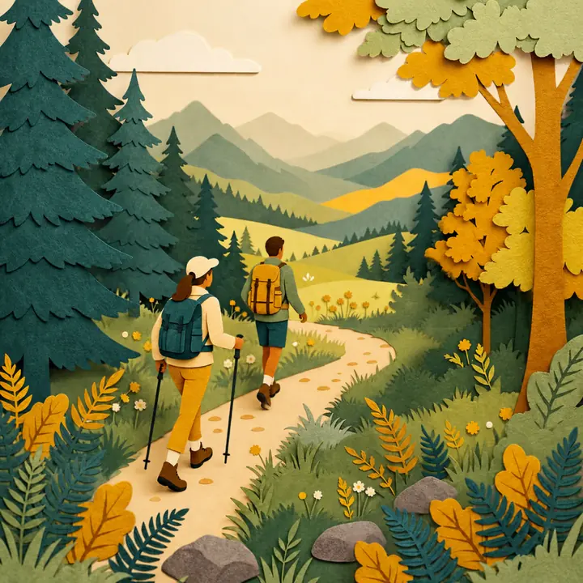

- Из Тбилиси
- около 2 ч по дороге
- Вода на выходе
- 37–41 °C
- Серные бассейны
- 32–38 °C
- Нацпарк
- 104 099 га
- Скорая
- 112
Статья входит в справочник о медицине в Грузии. Факты — с сайтов Национальной администрации туризма Грузии, производителя воды, национальных парков, NHS и ВОЗ. Проверено 19 ноября 2026 года.
Что посмотреть в Боржоми
Главное здесь — старый парк с источником, серные бассейны в лесу за ним и национальный парк. Так их перечисляет сайт Национальной администрации туризма Грузии georgia.travel — дальше просто «сайт georgia.travel». Ещё рядом есть монастырь, музей и соседние курорты. Парк, источник и бассейны — главные достопримечательности Боржоми, их можно обойти за день.
Парк и Екатерининский источник
В парке воду пьют прямо из-под земли. Сайт georgia.travel называет Екатерининский источник, пожалуй, самым любимым местом парка: сюда приезжают со всей Грузии.
Вода без пузырьков. Сайт georgia.travel предупреждает: вода в источнике не газированная. Привычного шипения, как в бутылке, не ждите.
Старый завод. Первый завод по розливу, по данным сайта georgia.travel, построили в 1890 году. Его историческое здание — слева, как только войдёте в парк. Самый большой завод сейчас стоит на окраине города.
Канатная дорога. От входа в парк она поднимается к скалам над городом. Сверху видны город и лес вокруг. Ещё в парке есть аттракционы, детская площадка и кафе. Часов работы и цен в официальных источниках мы не нашли — уточняйте у входа.
Наш совет. Возьмите кружку или небольшую бутылку. Если врач велел есть меньше соли, сколько можно пить, спросите его — почему, объясняем ниже.

Ликани
Это соседний курортный посёлок: georgia.travel называет Ликани среди небольших курортов вокруг города, вместе с Ахалдабой, Цагвери, Цеми и Бакуриани.
Зелёный монастырь и музей
Монастырь стоит в лесу недалеко от города, музей — в самом городе. Оба места хорошо подходят на вторую половину дня.
Зелёный монастырь. Так местные называют монастырь Святого Георгия: вокруг него зелёный лес. По сайту georgia.travel, он около 2 км от города. Дорогу уточните на месте.
Музей краеведения. Сайт georgia.travel называет его одним из старейших музеев Грузии. Здесь хранится более 40 000 предметов. Здание построили в 1890 году для администрации Романовых.
Простой день — наш вариант. Утром — источник и старый завод, потом канатная дорога. До обеда — прогулка к серным бассейнам. После обеда — музей или монастырь. На второй день — тропа в национальном парке, после регистрации. Это наш совет, а не официальный маршрут.
Минеральная вода «Боржоми»: что о ней известно
Это природная вода из недр. О ней пишут два официальных источника — производитель и сайт georgia.travel. На русской странице производителя это «минеральная вода, поднимающаяся из недр земли в Боржомском ущелье, окруженном горами».
Глубина и возраст. Сайт georgia.travel пишет, что вода поднимается на поверхность с глубины 9–10 км — и так уже более 1 500 лет. Другие цифры глубины мы не приводим: у производителя они расходятся.
Тёплая на выходе. На английской странице об истории бренда производитель пишет, что вода выходит из-под земли тёплой — 37–41 °C.
Более 60 минералов. На русской странице о воде сказано: «обогащенная более чем 60 уникальными минералами». Это рекламная фраза, а не анализ: списка минералов и их количества там нет.
Легенда об олене. По легенде с сайта производителя, источник нашёл раненый олень, «который вошел в воду и вышел полностью исцеленным». Это предание, а не медицинский факт.
Что сайт georgia.travel пишет о «лечебных свойствах». По его словам, воду используют при болезнях желудка, печени, желчного пузыря и почек. Эти свойства он связывает с вулканическим происхождением воды. Медицинского подтверждения мы не нашли и как совет это не передаём. Минеральная вода — не лекарство и не замена врачу.
Цифр по составу нет. На сайте производителя не указаны ни натрий, ни общая минерализация. Поэтому мы цифру не даём: смотрите этикетку на своей бутылке.

Сколько натрия и соли: кому осторожно
Осторожнее стоит быть тем, у кого повышенное давление, болезни сердца или почек, и тем, кому врач ограничил соль. Минеральная вода тоже идёт в дневную норму — вместе с едой.
Нормы. Британская служба здравоохранения NHS в статье о соли пишет: взрослым — не больше 6 г соли в день, это около одной чайной ложки без горки. ВОЗ ставит планку ниже: меньше 2000 мг натрия в день, то есть меньше 5 г соли. Цифры разные, поэтому даём обе.
Давление. По данным ВОЗ, главное последствие избытка натрия в питании — повышенное давление.
Как считать по этикетке. Часто на этикетке указан натрий. Британский фонд сердца (British Heart Foundation) в памятке об этикетках советует умножить это число на 2,5 — получится соль. Пример: 400 мг × 2,5 = 1 г.
Объём. Проверьте, на какой объём дана цифра — на 100 мл или на литр. И посчитайте, сколько вы на самом деле выпиваете за день.
Почки. NHS в советах людям с болезнью почек рекомендует здоровое питание с низким содержанием соли. Сколько именно — подскажет диетолог.
Наш совет: сначала спросите врача. Повышенное давление, болезни сердца или почек, диета с ограничением соли — в любом из этих случаев узнайте у врача, сколько минеральной воды вам можно в день. Особенно если пьёте её каждый день, а не пробуете у источника.

Серные бассейны: 32–38 °C в лесу за парком
Бассейны — в лесу, в 2–2,5 км пешком от парка по маркированной тропе. Сайт georgia.travel в одном месте пишет о двух с половиной километрах, в другом — о двух, поэтому даём обе цифры.
Температура. На странице о бассейнах georgia.travel пишет, что вода в среднем 32–38 °C. Самая тёплая — в полукруглом бассейне.
Для взрослых и детей. Есть большие бассейны для взрослых и маленькие для детей, а ещё души и раздевалки. Сайт georgia.travel советует взять купальник и полотенце.
Зимой. Сайт georgia.travel предлагает приехать зимой: тёплая вода приятно контрастирует с холодным горным воздухом. Но прямо не пишет, что бассейны открыты круглый год. Цен и часов работы мы тоже не нашли — уточните перед выходом.
О пользе. Сайт georgia.travel пишет, что вода бассейнов помогает при некоторых болезнях. Как и с питьевой водой, медицинского подтверждения мы не нашли. Как лечение мы бассейны не советуем.
Наш совет. Горячая вода подходит не всем: при беременности и повышенном давлении сначала спросите врача. В первый раз сидите в воде недолго и пейте воду. Не купайтесь в одиночку и после алкоголя. Закружилась голова — выходите медленно. Если человек потерял сознание, у него боль в груди или он путается — выведите его из воды, проверьте дыхание, уложите на бок и звоните 112. Бассейны в лесу, и помощь может ехать долго.
Национальный парк Боржоми-Харагаули
Посетителей Боржоми-Харагаульский национальный парк регистрирует в визит-центрах в Боржоми и Харагаули.
Войти в парк можно только после регистрации — так требует его официальный сайт nationalparks.ge. По его данным, это первый национальный парк, созданный в независимой Грузии, — в 1995 году. Площадь — 104 099 га, маркированных троп — 12.
Регистрация. На сайте парка крупно написано: «Please register before entering National Park!» — то есть зарегистрируйтесь до входа. Памятка для гостей уточняет: регистрируются в визит-центре — в самом городе или в Харагаули. Визит-центр в городе — на улице Месхети, 23. Телефон парка: +995 599 747 919.

Одежда и запас. Парк просит надеть плотные брюки и высокую обувь, например ботинки, а еду и воду взять с собой. От себя добавим: заряженный телефон с номером 112, одежду слоями и предупреждение в отеле, куда вы идёте и когда вернётесь.
Сезоны. Кавказский рододендрон и орхидеи цветут в мае–июне. С декабря по февраль парк предлагает походы на снегоступах. С октября по апрель на тропах можно встретить собак пастухов.
Собаки. Наш совет: не подходите к стадам и не кормите собак. Укусила или поцарапала собака — сразу к врачу. Почему это важно, объясняем на странице о бешенстве в Грузии.
Клещи. Британский сервис TravelHealthPro на странице о Грузии предупреждает о болезнях, которые переносят насекомые и клещи, в части Западной Азии. Среди них — Крымская-Конго геморрагическая лихорадка. Сервис советует всем путешественникам избегать укусов насекомых и клещей днём и ночью. Наш совет: длинные рукава, брюки, заправленные в носки, репеллент и осмотр кожи после каждой прогулки. Укусил клещ или после похода поднялась температура — к врачу.
Помощь далеко. На тропе помощь идёт долго. В экстренном случае сразу звоните 112.

Как добраться из Тбилиси в Боржоми
По дороге — около 2 часов: такое время даёт сайт georgia.travel. Пробки, погода и остановки могут его удлинить.
Поезд. В общем расписании Грузинской железной дороги есть ежедневные поезда между столицей и городом. Расписание меняется, поэтому время мы не переписываем — проверьте на railway.ge перед поездкой.
Маршрутки. По данным нацпарка, они каждый день идут из Тбилиси от метро «Дидубе», но правительство Канады советует ими не пользоваться: они плохо обслуживаются и часто без ремней безопасности — подробнее в нашем материале о маршрутках (на английском).
Машина или такси. Официальных цен нет, поэтому мы их не даём. Наш совет: договоритесь о цене и времени обратной дороги до выезда.
«Кукушка» до Бакуриани. Узкоколейка Боржоми — Бакуриани не работает с 2020 года. Восстановление объявлено, но сроки возобновления называли разные. Проверьте перед поездкой и не стройте план вокруг неё.
Когда ехать. Сайт georgia.travel описывает город как место с холодной зимой и долгим жарким летом. Летом гуляйте с утра. Зимой берите тёплую одежду и проверяйте дорогу перед выездом.
Больница и врач в Боржоми
Если срочно — звоните 112. Британский МИД в разделе о здоровье советует набрать 112 и попросить скорую. И предупреждает: вне Тбилиси медпомощь ограничена.
Больница. Сайт georgia.travel в медицинской информации для гостей называет Borjomi Geo Hospital: улица Георгия Саакадзе, 3, тел. 032 250 52 22. Сохраните адрес в телефоне, чтобы показать водителю. В экстренном случае звоните не туда, а в 112.
Клиники. Смотрите клиники Боржоми в каталоге 100doc.ge. На 19 ноября 2026 года там 3 клиники: две лаборатории и одна многопрофильная.
Если не срочно. Тбилиси — примерно в двух часах. Наш совет: если проблема может подождать, к врачу проще попасть в столице.
Клещи и собаки. После прогулок в лесу осмотрите кожу — подробнее в разделе о нацпарке. Укус собаки — повод сразу идти к врачу.
Полис. Для въезда в Грузию нужен полис с покрытием не меньше 30 000 лари — подробнее о правиле.
Едете дальше в горы — вот путеводитель по Казбеги. Хотите к морю — путеводитель по Батуми.
Частые вопросы
Можно ли пить «Боржоми» каждый день?
Официальной нормы для этой воды мы не нашли. Натрий из неё тоже идёт в дневную норму: NHS советует взрослым не больше 6 г соли в день, ВОЗ — меньше 5 г. При повышенном давлении, болезнях сердца или почек, а также если врач велел есть меньше солёного, сначала спросите его.
Почему вода в источнике в парке не газированная?
Сайт georgia.travel просто предупреждает, что в источнике она без пузырьков, не как в бутылке. Причину он не объясняет.
Какая вода в серных бассейнах?
В среднем 32–38 °C, по данным сайта georgia.travel. Есть большие бассейны для взрослых и маленькие для детей. При беременности и повышенном давлении сначала спросите врача.
Нужна ли регистрация в нацпарке?
Да. Сайт парка просит зарегистрироваться до входа — в визит-центре в городе или в Харагаули. Телефон парка: +995 599 747 919.
Ходит ли «Кукушка» в Бакуриани?
Нет, линия не работает с 2020 года. Сроки возобновления называли разные — проверьте перед поездкой.
Как добраться из Тбилиси?
Около 2 часов по дороге, по данным сайта georgia.travel. Есть и ежедневные поезда — расписание на railway.ge.
Где больница?
Сайт georgia.travel называет Borjomi Geo Hospital: улица Георгия Саакадзе, 3, тел. 032 250 52 22. В экстренном случае звоните 112.
Нужен ли полис для поездки?
Да. Для въезда в Грузию нужен полис с покрытием не меньше 30 000 лари.
Источники
- Национальная администрация туризма Грузии: город, парк, вода, бассейны, достопримечательности (на английском)
- Национальная администрация туризма Грузии: серные бассейны (на английском)
- Национальная администрация туризма Грузии: медицинская информация для гостей (на английском)
- Производитель воды: главная страница — происхождение, минералы, легенда
- Производитель воды: история бренда — температура на выходе (на английском)
- nationalparks.ge: национальный парк — год, площадь, тропы, регистрация (на английском)
- nationalparks.ge: памятка для гостей — регистрация, одежда, сезоны (на английском)
- nationalparks.ge: как добраться (на английском)
- Грузинская железная дорога: общее расписание (на английском)
- Первый канал Грузии (1TV): восстановление горной железной дороги, апрель 2026 (на английском)
- NHS: дневная норма для взрослых (на английском)
- NHS: жизнь с болезнью почек (на английском)
- ВОЗ: информационный бюллетень о дневной норме и давлении (на английском)
- British Heart Foundation: как читать этикетки (на английском)
- TravelHealthPro: Грузия (на английском)
- Британский МИД: здоровье (на английском)
- Правительство Канады: рекомендации для путешественников, Грузия (на английском)
Это справочная информация, а не медицинская консультация: лечение назначает врач. Проверено 19 ноября 2026 года.